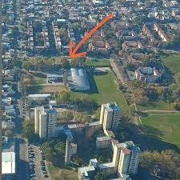
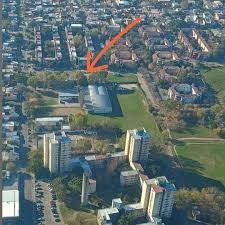

Sobre nuestra escuela
La Técnica N°1 O.E.A es una institución con una rica historia de formación técnica y compromiso con la comunidad. A lo largo de los años, ha formado generaciones de estudiantes en áreas como electrónica, electromecánica, informática y construcciones.
La Escuela Técnica Nº1 “Organización de los Estados Americanos” (OEA), ubicada en el corazón de Villa Tesei, partido de Hurlingham, es una institución pública con una sólida trayectoria en la formación técnica de jóvenes.
Situada en la calle Bradley 395, esquina Pizzagalli, la escuela se destaca por su infraestructura adaptada a las necesidades de la educación técnica, con talleres especializados, laboratorios, aulas equipadas y espacios comunes que fomentan el aprendizaje colaborativo.
La EEST Nº1 OEA ofrece una formación secundaria técnica que prepara a sus egresados para insertarse tanto en el mundo laboral como en estudios superiores. Además, promueve proyectos interdisciplinarios, prácticas profesionalizantes y vínculos con empresas e instituciones del sector productivo.
Uno de los aspectos más valorados de la escuela es su comunidad educativa. Docentes, directivos, estudiantes y familias participan activamente en la vida institucional, generando un entorno de respeto, inclusión y crecimiento.
La Escuela Técnica OEA no solo forma técnicos, sino ciudadanos comprometidos con su entorno. A través de actividades culturales, deportivas y solidarias, los estudiantes desarrollan habilidades blandas, conciencia social y espíritu crítico.
Si estás buscando una escuela que combine excelencia académica, formación técnica de calidad y un ambiente humano enriquecedor, la EEST Nº1 “Organización de los Estados Americanos” de Hurlingham es una opción que vale la pena considerar.
 
